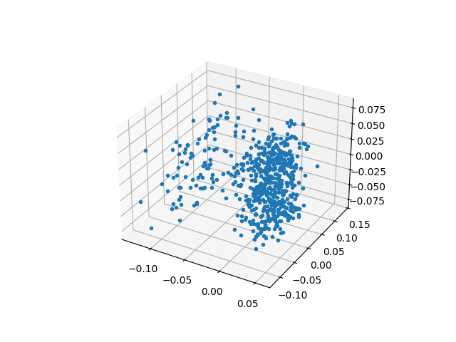

Eşsiz Değer Ayrıştırma (Singular Value Decomposition -SVD-) ile bir veri madenciliği örneği göreceğiz. [6]’da SVD’nin matematiğini işledik. SVD bir matris \(A\) üzerinde ayrıştırma yapar, ve \(A\) herhangi boyutta, türde bir matris olabilir.
Ayrıştırma \(m \times n\) boyutlu matrisi \(A=CWF\) olarak ayrıştırır, burada \(C\), ana matris ile aynı miktarda satıra sahiptir, \(F\) aynı miktarda kolona sahiptir. Ayrıştırma sonrası \(A\)’nin kertesi (rank) \(r\) ortaya çıkar, eğer tüm \(A\) kolonları birbirinden bağımsız ise, o zaman \(r=m\) olacaktır, ama kolonların bazıları mesela aynı ölçümü değişik katlarda tekrarlıyor ise, o zaman matriste eşsizlik vardır, ve bu durumda \(r < m\) olur, ve ortadaki \(W\) matrisi \(r \times r\) olduğu için beklenenden daha ufak boyutlarda olabilir.
Ayrıca SVD, \(W\) çaprazındaki özdeğerleri büyüklük sırasına göre dizer, ve her özdeğere tekabül eden özvektörler de ona göre sıraya dizilmiş olacaktır, ve SVD tamamlanınca mesela “en büyük 10” özdeğere ait olan \(CWF\) değerlerini alıp, diğerlerini atmayı da seçebiliriz, yani kerte üzerinden yapılan “eleme” üstüne bir eleme de kendimiz yapabiliriz. Bu elemeyi yapabilmemizin mantığı şöyle; küçük özdeğerlerin çarptığı özvektörlerin nihai toplama daha az etki ettiği söylenebilir, ve bu “gürültüyü” elemek sonucu değiştirmeyecektir. Ayrıca bu elemeyi yaparak bir tür boyut azaltma (dimensionality reduction) işlemini de aynı zamanda başarmış oluruz.
Ayrıştırmanın Anlamları
Bir ayrıştırmayı değişik şekillerde görmek mümkündür. Bunlardan önemli birisi çizit bakış açısıdır (graph interpretation). Çizit bilindiği gibi düğümler ve onlar arasındaki ayrıtlardan (edges) oluşur. Bir çizit matris formunda temsil edilebilir, satır / kolon kesişimi iki düğüm arasındaki ayrıtın ağırlığını, ya da varlığını (1 ve 0 üzerinden) temsil edecektir. Bu durumda SVD sonucunda elde edilen \(CWF\), bize iki düğüm arası geçişli (bipartite) çiziti üç düğüm arası geçişli (tripartite) çizite çevrilmiş halde geri verir. Ve bu yeni çizitde en fazla \(r\) tane geçiş noktaları (waystations) oluşmuştur, üstte bahsettiğimiz eleme ile geçişler daha da azaltılabilir.
Şimdi, bu geçiş noktalarına olan \(C\)’nin “bağlanma şekli’’,”bağlanma
kuvveti”, ek kümeleme basamağı tarafından kullanılabilir. Bu
“azaltılmış” geçişin üzerindeki her işlem / ona yapılan her referans
kümeleme için bir ipucudur. Bunu görmek için örnek zaman serilerinin SVD
sonrası elde edilen \(C\) (örnekte
u) matrisinin ilk iki kolonunu bile grafiklemek
yeterlidir.
import scipy.linalg as lin
data = np.genfromtxt("synthetic_control.data", dtype=float)
# before norm, and take only 10 data points
data = data[:,0:10]
print data.shape
# show the mean, and std of the first time series
print data[0,:]
print np.mean(data[0,:], axis=0)
print np.std(data[0,:], axis=0)
# normalize
data -= np.mean(data, axis=0)
data /= np.std(data, axis=0)
# after norm
print data[0,:]
u,s,v = lin.svd(data, full_matrices=False)
print 'svd'
print u.shape
print s
print v.shape
plt.plot(u[:,0], u[:,1], '.')
plt.savefig('svd_3.png')(600, 10)
[ 28.7812 34.4632 31.3381 31.2834 28.9207 33.7596 25.3969 27.7849
35.2479 27.1159]
30.40918
3.16894521278
[-0.35501371 0.85457443 -0.10641642 -0.16202975 -0.51986031 0.56762802
-1.19371757 -0.29304061 1.27639519 -0.2095089 ]
svd
(600, 10)
[ 48.29293361 30.97232928 24.52860861 20.63081553 20.0940039
17.52035809 16.48932523 16.03796372 15.41270426 14.27678793]
(10, 10)Görüldüğü gibi net bir şekilde iki tane küme ortaya çıktı. Bu kümeler yazının başındaki iki ayrı zaman serisi öbeklerine tekabül ediyorlar.
O zaman serilerini ayırtetmek için ne yaparız? Üstteki veriler üzerinde kmeans işletebilirdik, ya da kabaca bakıyoruz, dikey olarak -0.025 seviyesinde bir çizgi ayıraç olarak görülebilir. Numpy filtreleme tekniği
u[:,0] < -0.025
bize ana veri üzerinde uygulanabilecek True ve
False değerleri verir, bunları alarak ana veriye filtrele
olarak uygularız,
data[u[:,0] < -0.025]
ve mesela birinci kümeye ait zaman serilerini bulabiliriz.
Kontrol etmek için ilk 3 kolonun değerlerini üç boyutta grafikleyelim.
from mpl_toolkits.mplot3d import Axes3D
import scipy.linalg as lin
data = np.genfromtxt("synthetic_control.data", dtype=float)
data = data[:,0:10]
print data.shape
data -= np.mean(data, axis=0)
data /= np.std(data, axis=0)
u,s,v = lin.svd(data)
print 'svd'
print u.shape
print s
print v.shape
fig = plt.figure()
ax = Axes3D(fig)
ax.plot(u[:,0], u[:,1], u[:,2],',', zs=0, zdir='z', label='zs=0, zdir=z')
plt.savefig('svd_4.png')(600, 10)
svd
(600, 600)
[ 48.29293361 30.97232928 24.52860861 20.63081553 20.0940039
17.52035809 16.48932523 16.03796372 15.41270426 14.27678793]
(10, 10)
Yine iki tane küme olduğunu görüyoruz.
Kelime Vektorleri [5]
Diyelim ki elimizde üç tane cümle var. Bu cümlelere dayanarak bir kelimenin vektörsel temsilini bulmak istiyoruz.
Matris içindeki sayılar her kelimenin bir diğeri ile beraber kaç kere aynı cümlede olduğuna (cooccurence) göre oluşturuldu. Mesela “I’’ ile”like’’ kelimesi beraber 2 kere çıkmış, bu matriste 1,2 ve 2,1 kordinatlarında görülüyor. O zaman bu matrise bir kelimenin satırsal ya da kolonsal temsiline bakarak o kelimenin vektörsel halini bulabiliriz. Mesela “enjoy’’ icin bu \(\left[\begin{array}{cccccccc} 1&0&0&0&0&1&0 \end{array}\right]\).
Fakat gerçek uygulamalarda bu şekilde bir temsil performans ve depolama açısından bedeli olabilir; eğer eldeki kelime sayısı 1 milyon ise bu matris 1 milyon x 1 milyon öğeye ihtiyaç duyar.
Çözüm: boyut azaltmak. SVD bu iş için biçilmiş kaftan.
import scipy.linalg as lin
words = ["I", "like", "enjoy",
"deep", "learning", "NLP", "flying", "."]
X = np.array([[0,2,1,0,0,0,0,0],
[2,0,0,1,0,1,0,0],
[1,0,0,0,0,0,1,0],
[0,1,0,0,1,0,0,0],
[0,0,0,1,0,0,0,1],
[0,1,0,0,0,0,0,1],
[0,0,1,0,0,0,0,1],
[0,0,0,0,1,1,1,0]])
U, s, Vh = lin.svd(X, full_matrices=False)
print U.shape, s.shape, Vh.shape
for i in xrange(len(words)):
plt.text(U[i,0], U[i,1], words[i])
plt.ylim(-0.8,0.8)
plt.xlim(-0.8,0.2)
plt.savefig('svd_8.png')(8, 8) (8,) (8, 8)\(U\)’nun ilk iki kolonunu grafikledik çünkü en büyük iki eşsiz değere tekabül eden kolonlar bunlar, yani en “önemli’’ değerler orada.
En önemli kolonları bulduk, o zaman diyebiliriz ki bu iki kolon üzerinden bir kelimenin vektörsel temsilini de bulmuş olduk. Bu temsil eskisine göre daha küçük, ve özetleme açısından daha kuvvetli. Artık kelimelerin birbirine yakınlığı, benzerliği gibi hesaplar bu vektör üzerinden yapılabilir.
Üstteki grafik yakınlık açısından bazı anlamsal yapıyı göstermeye başladı bile: mesela “like’’ ve”enjoy’’ birbirine yakın, bu mantıklı çünkü ikisi de birinin yaptığı şeyler. Diğer yandan “learning’’ kelimesine en yakın”flying’’ bu da mantıklı, her iki kelime de cümle sonlarında ortaya çıkıyorlar ve hedef kelimeler.
Gerçek uygulamalar için bazı taklalar:
İngilizce’nin yapısı sebebiyle sürekli görülen ama çok anlam katmayan bazı kelimeler var, mesela “the’‘, “he’‘, “has’’ gibi. Bu kelimeler direk sayılırsa bu sayı çok yüksek. Çözüm, belli bir sayı üstünü saymamak, ya da onları tamamen devreden çıkartmak.
Word2Vec
Yapay Sinir Ağları (YSA) literatüründe duyulan word2vec aslında üstteki vektörsel temsilin başka bir yoldan öğrenilmesinden ibaret. YSA yaklaşımı ile beraber olma sayısı hesaplanmadan vektörsel temsil direk öğreniliyor, bunun için her kelime için o kelime yakınındaki (bir pencere içindeki) diğer kelimeler tahmin edilmeye uğraşılıyor, daha doğrusu hedef fonksiyon budur, ve eğitim verisine bakılarak bu tahmindeki başarı geriye yayılım (backpropagation -backprop-) ile düzeltilerek arttırılıyor.
Word2Vec’in insanı şaşırtabilen bazı ilginç özellikleri var: mesela çok büyük veriler üzerinden vektörler hesaplandıktan sonra mesela kral vektörünü alıp ondan erkek vektörünü çıkartıyorsunuz, ve kadın vektörünü toplayorsunuz ve kraliçe vektörünü elde ediyorsunuz (ona yakın bir vektörü en azından). İlginç değil mi? Bu keşif pek çok araştırmacıya “vay canına’’ dedirtirdi, tabii ki bunun istatistiki sebepleri var, bu konuya bakanlar da oldu, detaylar için [5, 18:50].
Örnek
Şimdi biraz daha değişik bir probleme bakalım, bu sefer bir grup kelimeyi birbirlerine benzerlikleri (ya da uzaklığı) üzerinden kümelemeye uğraşacağız.
Benzerlik, Levenhstein mesafesi adlı ölçüt [2] üzerinden olacak.
Matrisimiz her kelimenin her diğer kelime ile arasındaki uzaklığı veren
bir matris olmalı, eğer 100 kelime var ise, bu matris 100 x 100
boyutlarında olacak. SVD sonrası elde edilen u üzerinde
kmeans işleteceğiz, ve kümeleri bulacağız. Ayrıca her küme için bir
“temsilci’’ seçebilmek için kmeans’in bize verdiği küme ortası
kordinatının en yakın olduğu kelimeyi çekip çıkartacağız, ve onu
temsilci olarak alacağız.
Kelime mesafesi olarak
def levenshtein(s1, s2):
l1 = len(s1)
l2 = len(s2)
matrix = [range(l1 + 1)] * (l2 + 1)
for zz in range(l2 + 1):
matrix[zz] = range(zz,zz + l1 + 1)
for zz in range(0,l2):
for sz in range(0,l1):
if s1[sz] == s2[zz]:
matrix[zz+1][sz+1] = min(matrix[zz+1][sz] + 1,
matrix[zz][sz+1] + 1,
matrix[zz][sz])
else:
matrix[zz+1][sz+1] = min(matrix[zz+1][sz] + 1,
matrix[zz][sz+1] + 1,
matrix[zz][sz] + 1)
return matrix[l2][l1]import leven
s1 = "pizza"
s2 = "pioazza"
distance = leven.levenshtein(s1, s2)
print 'The Levenshtein-Distance of ',s1, ' and ', s2, ' is ', distance
s1 = "hamburger"
s2 = "haemmurger"
distance = leven.levenshtein(s1, s2)
print 'The Levenshtein-Distance of ',s1, ' and ', s2, ' is ', distanceThe Levenshtein-Distance of pizza and pioazza is 2
The Levenshtein-Distance of hamburger and haemmurger is 2import scipy.linalg as lin
from sklearn.cluster import KMeans
import itertools
words = np.array(
['the', 'be', 'to', 'of', 'and', 'a', 'in', 'that', 'have',
'I', 'it', 'for', 'not', 'on', 'with', 'he', 'as', 'you',
'do', 'at', 'this', 'but', 'his', 'by', 'from', 'they', 'we',
'say', 'her', 'she', 'or', 'an', 'will', 'my', 'one', 'all',
'would', 'there', 'their', 'what', 'so', 'up', 'out', 'if',
'about', 'who', 'get', 'which', 'go', 'me', 'when', 'make',
'can', 'like', 'time', 'no', 'just', 'him', 'know', 'take',
'people', 'into', 'year', 'your', 'good', 'some', 'could',
'them', 'see', 'other', 'than', 'then', 'now', 'look',
'only', 'come', 'its', 'over', 'think', 'also', 'back',
'after', 'use', 'two', 'how', 'our', 'work', 'first', 'well',
'way', 'even', 'new', 'want', 'because', 'any', 'these',
'give', 'day', 'most', 'us'])
print "calculating distances..."
(dim,) = words.shape
f = lambda (x,y): leven.levenshtein(x,y)
res=np.fromiter(itertools.imap(f, itertools.product(words, words)),
dtype=np.uint8)
A = np.reshape(res,(dim,dim))
print "svd..."
u,s,v = lin.svd(A, full_matrices=False)
print u.shape
print s.shape
print s[:10]
print v.shape
data = u[:,0:8]
k=KMeans(init='k-means++', n_clusters=25, n_init=10)
k.fit(data)
centroids = k.cluster_centers_
labels = k.labels_
print labels[:10]
def dist(x,y):
return np.sqrt(np.sum((x-y)**2, axis=1))
print "clusters, centroid points.."
for i,c in enumerate(centroids):
idx = np.argmin(dist(c,data[labels==i]))
print words[labels==i][idx]
print words[labels==i]
plt.plot(centroids[:,0],centroids[:,1],'x')
plt.hold(True)
plt.plot(u[:,0], u[:,1], '.')
plt.savefig('svd_5.png')
from mpl_toolkits.mplot3d import Axes3D
fig = plt.figure()
ax = Axes3D(fig)
ax.plot(u[:,0], u[:,1], u[:,2],'.', zs=0,
zdir='z', label='zs=0, zdir=z')
plt.savefig('svd_6.png')calculating distances...
svd...
(100, 100)
(100,)
[ 357.98820225 46.49125611 32.1352688 23.80316426 21.48889925
17.53558749 17.2577475 15.08233454 13.60531866 12.78642892]
(100, 100)
[ 0 12 20 17 4 23 3 7 9 14]
clusters, centroid points..
she
['the' 'she']
even
['one' 'get' 'year' 'over' 'after' 'even' 'new']
not
['for' 'not' 'on' 'you' 'who' 'into' 'now' 'how']
if
['in' 'it' 'his' 'if' 'him' 'its']
any
['and' 'say' 'an' 'all' 'can' 'back' 'way' 'want' 'any' 'day']
most
['about' 'just' 'also' 'first' 'most']
come
['people' 'some' 'come']
that
['that' 'what' 'than']
only
['only' 'well']
have
['have' 'make' 'take']
with
['with' 'will' 'which']
like
['like' 'time' 'give']
be
['be' 'he' 'we' 'me' 'see' 'use']
could
['would' 'could']
I
['I' 'by' 'my']
this
['this' 'think']
good
['from' 'know' 'good' 'look' 'work']
our
['of' 'or' 'out' 'your' 'our']
other
['her' 'there' 'their' 'other']
because
['because']
do
['to' 'do' 'so' 'go' 'no' 'two']
up
['but' 'up' 'us']
these
['these']
at
['a' 'as' 'at']
they
['they' 'when' 'them' 'then']Bu tekniğin uygulanabileceği daha pek çok alan var. Mesela her dokümanın içindeki belli kelimelerin sayıları kolonlarda (her kolon özel bir kelimeye tekabül edecek şekilde), ve dökümanların kendisi satırlarda olacak şekilde bir matrisimiz olsaydı, SVD bu matris üzerinde de bir kümeleme için kullanılabilirdi. Bu örnekte “kaç tane kelime olduğu’’ gibi bir ölçüt vardır (daha önce kelimelerin birbirine uzaklığını kullandık), ama teknik yine de ise yarar.
Kaynaklar
Not: np.fromiter .. itertools.imap kullanımının tarifi
için [4].
[1] Alcock, Synthetic Control Chart Time Series, kdd.ics.uci.edu/databases/synthetic_control/synthetic_control.data.html
[2] Bayramlı, Kelime Benzerligi - Levenshtein Mesafesi, https://burakbayramli.github.io/dersblog/sk/2012/07/kelime-benzerligi-levenshtein-mesafesi.html
[3] Skillicorn, D., Understanding Complex Datasets Data Mining with Matrix Decompositions
[4] Bayramlı, Dongu Yazmamak, Fonksiyonel Diller, Python, https://burakbayramli.github.io/dersblog/sk/2012/07/dongu-yazmamak-fonksiyonel-diller-python.html
[5] Socher, {}, https://www.youtube.com/watch?v=T8tQZChniMk
[6] Bayramlı, Lineer Cebir, Ders 29